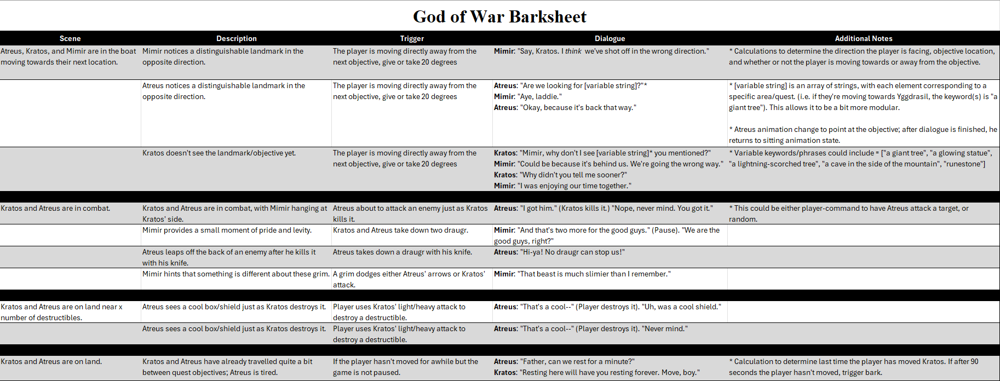

Writing Samples (WIP)
Please note: below are samples for various games I enjoyed so much that I wanted to write my own barks, dialogue, or quests for. None of the samples below are in any of the relevant games, nor did I work on any of them.
God of War Barks
Below is a barksheet written for God of War (2018) and God of War: Ragnarok. Most of them are context-specific, but are still general enough that they can be modular (i.e. using variable strings when moving away from an objective allows the barks to be repurposed and reused in different parts of the game. See the additional notes section in the barksheet for more information.) Similarly, outside of additional VO and (perhaps) some additional animations, there are no additional assets or requirements that would be needed.
Hunt: Showdown Found Lore
Below is a sample of found lore in the form of a diary entry. Context: written by an unknown monster hunter at an unknown time, it chronicles the few details the hunter knew of a monster that haunted the Bayou simply known as the Priestess. Many hunter diaries exist with efforts made to collate them into a single tome called The Bayou Bestiary.
[The date and name is faded and illegible]
It’s difficult to sift through all the accounts of encounters with the monster just called the Priestess. These documents somehow
span nigh a century. Most do have one common thread: a beautiful belle walking alone at night, seemingly unaware of her
surroundings, but once she is approached, a wholly separate entity replaces the once-benign woman; tattoos covering her arms, legs, and face,
with deep scars across her forearms and open midriff—a stark white of scar tissue against a caramel-brown skin—but most terrifying is her hair,
which at first appear as dreads, but upon closer inspection, they sway and hiss not unlike water moccasins, perhaps as many as thirty that rise
up beside that haunting visage. Perhaps her eyes do suck the souls of her victims, but at this time I cannot confirm this.
The hunters who’ve survived the encounter chronicle the Priestess preferring distance to grant her time to perform her blasphemous ritual,
summoning voodoo dolls to life to explode, shooting shrapnel in all directions. No armor has yet been discovered to stop these from piercing
one’s body, almost guided by something supernatural one can never accurately articulate.